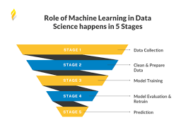
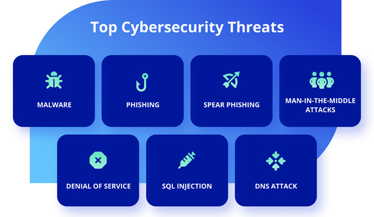

Master Technology
Full-Stack Web Development: Full-stack web development courses provide comprehensive training in both front-end and back-end web development. This course equips individuals with the skills to design and develop fully functional web applications. It covers programming languages like HTML, CSS, JavaScript, server-side technologies, databases, and frameworks. Full-stack web developers are in high demand as businesses increasingly rely on web-based solutions.

Data Science and Machine Learning: Data science and machine learning courses focus on analyzing and interpreting large datasets, building predictive models, and extracting insights from data. With the exponential growth of data, organizations across various industries seek professionals who can leverage data to make informed decisions and develop machine learning algorithms. These courses typically cover statistics, programming languages like Python or R, data visualization, and machine learning algorithms.
Cybersecurity: Cybersecurity courses provide training in protecting computer systems, networks, and data from unauthorized access, cyber threats, and data breaches. With the increasing frequency and sophistication of cyber attacks, organizations need skilled professionals to secure their digital assets. Cybersecurity courses cover topics such as network security, ethical hacking, cryptography, risk assessment, and incident response.
